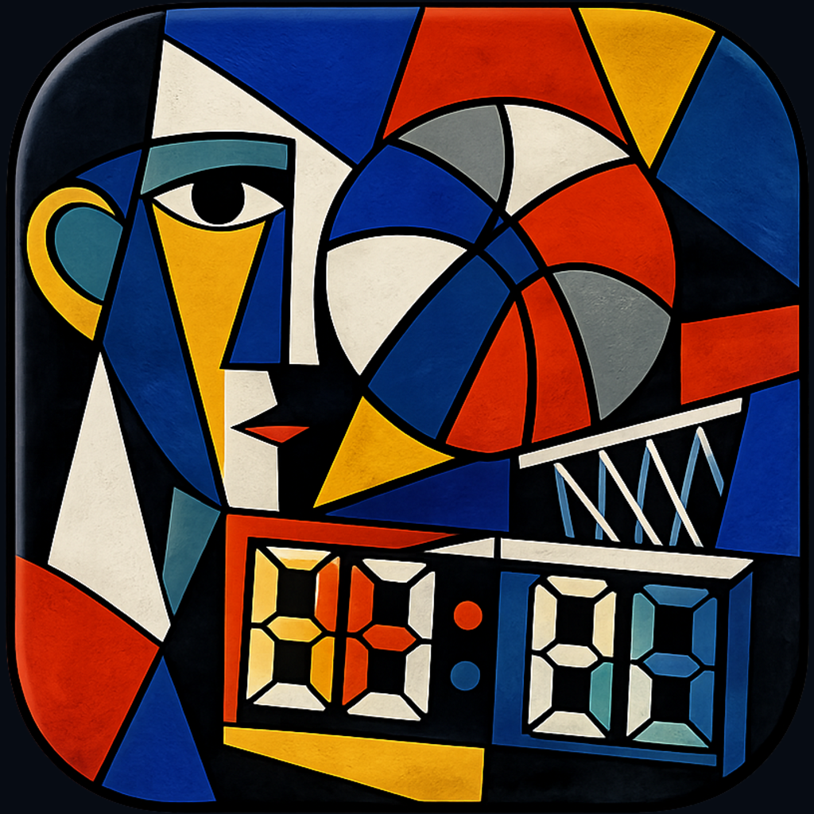

Record every basketball game with automatic player and team stats. AI summaries, Bluetooth sync, iCloud — your basketball journey, documented.
Download on the App Store2PT/3PT, free throws, rebounds, assists, steals, blocks, turnovers, fouls and full stat tracking.
Periods, substitutions, late arrivals, auto-end period, undo & redo — complete game management.
Create and manage teams and players with avatars, jersey numbers, height, and weight.
Per-game details, cumulative & average stats, starter/bench game counts.
Connect DeepSeek, OpenAI or Anthropic to generate summaries, MVP and highlights.
Organize games into groups for filtered history and career views.
Real-time collaborative scoring across multiple devices via Bluetooth.
Sync game data to iCloud for cross-device access and restore.
2分/3分、罚球、篮板、助攻、抢断、盖帽、失误、犯规等完整技术统计。
开节、暂停、换人、晚到球员加入、自动结束节次、撤销重做，覆盖全部比赛场景。
创建和管理球队与球员，支持头像、号码、身高、体重等信息。
按比赛查看详情，按球员查看累计与场均，首发/替补场次统计。
接入 DeepSeek、OpenAI、Anthropic，自动生成比赛总结、MVP 与高亮时刻。
创建分组归类比赛，按组筛选历史与生涯数据。
多台设备通过蓝牙实时同步记分，适合多人协作记录。
将比赛数据同步到 iCloud，跨设备查看与恢复。
2分/3分、罰球、籃板、助攻、抄截、阻攻、失誤、犯規等完整技術統計。
開節、暫停、換人、晚到球員加入、自動結束節次、復原重做。
建立和管理球隊與球員，支援頭像、號碼、身高、體重等資訊。
按比賽檢視詳情，按球員檢視累計與場均，先發/替補場次統計。
接入 DeepSeek、OpenAI、Anthropic，自動生成比賽總結、MVP 與高光時刻。
建立分組歸類比賽，按組篩選歷史與生涯資料。
多臺裝置透過藍牙即時同步記分，適合多人協作記錄。
將比賽資料同步到 iCloud，跨裝置檢視與恢復。
Zeichne jedes Spiel auf, mit automatischen Statistiken. KI-Zusammenfassungen, Bluetooth-Sync, iCloud — deine Basketball-Reise, dokumentiert.
Lade im App Store2PT/3PT, Freiwürfe, Rebounds, Assists, Steals, Blocks, Turnover, Fouls und mehr.
Perioden, Auswechslungen, Nachzügler, automatischer Periodenende, Rückgängig & Wiederholen.
Teams und Spieler mit Avataren, Nummern, Größe und Gewicht verwalten.
Details pro Spiel, kumulierte & durchschnittliche Statistiken, Starter/Bank.
Verbinde DeepSeek, OpenAI oder Anthropic für Zusammenfassungen, MVP und Highlights.
Spiele in Gruppen organisieren für gefilterte Ansichten.
Echtzeit-Zusammenarbeit bei der Punkteerfassung zwischen Geräten.
Spieldaten in iCloud sichern für geräteübergreifenden Zugriff.
Registra cada partido con estadísticas automáticas. Resúmenes IA, sincronización Bluetooth, iCloud — tu trayectoria, documentada.
Descargar en App Store2PT/3PT, tiros libres, rebotes, asistencias, robos, tapones, pérdidas, faltas y más.
Periodos, sustituciones, llegadas tardías, final automático, deshacer & rehacer.
Gestiona equipos y jugadores con avatares, números, altura y peso.
Detalles por partido, estadísticas acumuladas y promedio, titular/suplente.
Conecta DeepSeek, OpenAI o Anthropic para resúmenes, MVP y destacados.
Organiza partidos en grupos para vistas filtradas.
Puntuación colaborativa en tiempo real entre dispositivos.
Sincroniza datos en iCloud para acceso multidispositivo.
Enregistrez chaque match avec des statistiques automatiques. Résumés IA, Bluetooth, iCloud — votre parcours basketball, documenté.
Télécharger sur l'App Store2PT/3PT, lancers francs, rebonds, passes, interceptions, contres, pertes, fautes.
Périodes, remplacements, arrivées tardives, fin automatique, annuler/rétablir.
Gérez équipes et joueurs avec avatars, numéros, taille et poids.
Détails par match, stats cumulées et moyennes, titulaire/remplaçant.
Connectez DeepSeek, OpenAI ou Anthropic pour résumés, MVP et moments forts.
Organisez les matchs en groupes pour des vues filtrées.
Score collaboratif en temps réel entre appareils.
Données synchronisées sur iCloud, accès multi-appareils.
Registra ogni partita con statistiche automatiche. Riassunti AI, Bluetooth, iCloud — il tuo percorso nel basket, documentato.
Scarica su App Store2PT/3PT, tiri liberi, rimbalzi, assist, rubate, stoppate, palle perse, falli.
Periodi, sostituzioni, arrivi tardivi, termine automatico, annulla/ripeti.
Gestisci squadre e giocatori con avatar, numeri, altezza e peso.
Dettagli per partita, statistiche cumulate e medie, titolare/panchina.
Collega DeepSeek, OpenAI o Anthropic per riassunti, MVP e highlights.
Organizza partite in gruppi per viste filtrate.
Punteggio collaborativo in tempo reale tra dispositivi.
Dati sincronizzati su iCloud per accesso multi-dispositivo.
2PT/3PT、フリースロー、リバウンド、アシスト、スティール、ブロック、ターンオーバー、ファウル。
ピリオド管理、交代、遅刻追加、自動終了、元に戻す/やり直し。
アバター、背番号、身長、体重などで管理。
試合ごとの詳細、選手ごとの累計と平均、先発/ベンチ。
DeepSeek、OpenAI、Anthropic対応。サマリー、MVP、ハイライト生成。
試合をグループ化して履歴とキャリアをフィルタリング。
複数デバイス間でリアルタイム協調記録。
試合データをiCloudに同期、デバイス間でアクセス。
모든 경기를 기록하고 선수와 팀 통계를 자동 집계합니다. AI 요약, Bluetooth 동기화, iCloud 지원.
App Store에서 다운로드2PT/3PT, 자유투, 리바운드, 어시스트, 스틸, 블록, 턴오버, 파울 등.
피리어드 관리, 교체, 지각 선수 추가, 자동 종료, 실행 취소/다시 실행.
아바타, 번호, 키, 몸무게로 팀과 선수 관리.
경기별 세부 정보, 선수별 누적/평균, 선발/벤치.
DeepSeek, OpenAI, Anthropic 연결. 요약, MVP, 하이라이트 생성.
경기를 그룹으로 분류하여 필터링.
여러 기기 간 실시간 협업 기록.
경기 데이터를 iCloud에 동기화, 기기 간 액세스.
Записывайте каждую игру с автоматической статистикой. ИИ-резюме, Bluetooth, iCloud — ваш баскетбольный путь задокументирован.
Загрузить в App Store2PT/3PT, штрафные, подборы, передачи, перехваты, блок-шоты, потери, фолы.
Периоды, замены, опоздавшие, авто-завершение, отмена/повтор.
Управляйте с аватарами, номерами, ростом и весом.
Детали по каждой игре, накопленная и средняя статистика, старт/запас.
Подключите DeepSeek, OpenAI или Anthropic для резюме, MVP и ярких моментов.
Организуйте игры в группы для фильтрации.
Совместный счёт в реальном времени между устройствами.
Синхронизируйте данные в iCloud для доступа с разных устройств.